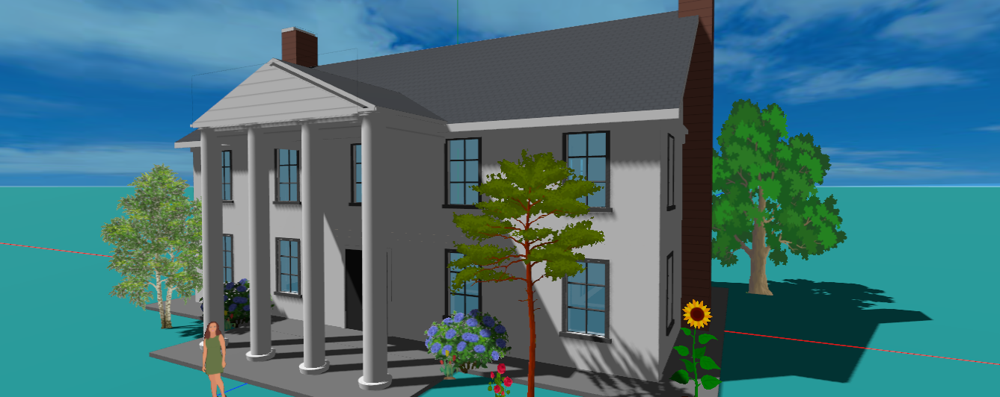
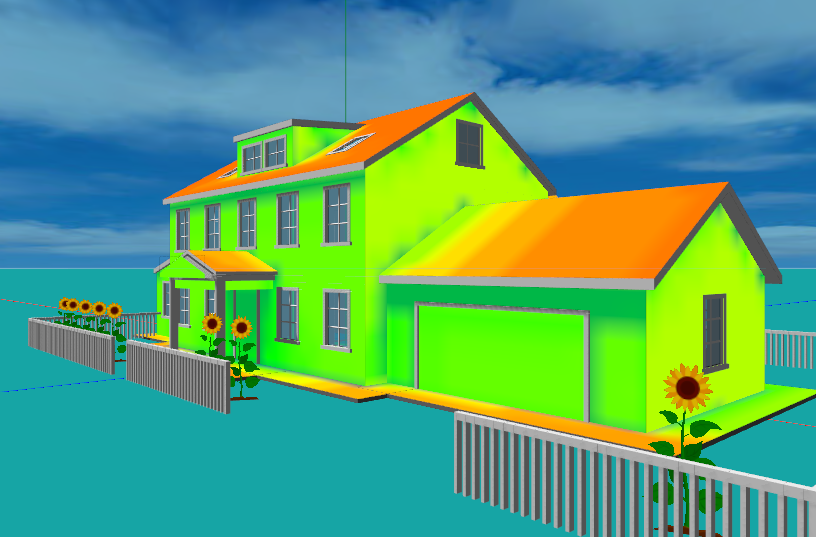

A New Way of Design
Aladdin's new AI assistant turns natural languages into design actions in complex projects
Designing something as intricate as a building has always meant learning to speak the software's language — the menus and tools of a CAD program to draw it, the input decks of a physics simulator to test it. Aladdin's new AI assistant inverts that arrangement. You speak your language, and it turns your words into design actions in the scene: you type what you have in mind into the AI Assistant’s input field — "build a two-storey farmhouse facing south," "add a north wing and a front porch," "how much would it cost to heat in January?" — and it carries out the work directly in the 3D world in front of you. Nothing to import, nothing to configure. And it is not confined to a single tidy box: the same conversation scales to a complex project of many connected parts — wings, dormers, an attached garage, landscaping — drawing the design and evaluating how it performs in the same breath, with the model updating as you speak.
This article walks through what that new way of working actually looks like: how the assistant works on whatever is already in your scene with no setup, how it turns a single sentence into a real building you can keep editing, how it grows that building into a complex, many-part design through back-and-forth conversation, how it runs the energy physics and reads the results back to you, and how it explains its reasoning as it goes.
No setup — it works on whatever is in your scene
The first thing worth saying is how simple it is. You do not choose a template, fill in a form, or enter a special design mode to use the assistant. You type into the AI Assistant’s input field and press send. This is easy to underestimate, because a feature this capable feels like it ought to be walled off behind some heavier apparatus — a wizard, a separate workspace, a setup step first. It isn't. The assistant is simply present in your ordinary editing session, ready whenever you are.
There is one thing you do need: you have to be signed in. The assistant works on your account — that is how it saves your design and keeps the conversation with it — so if you are browsing anonymously, Aladdin will prompt you to sign in (it is free) the moment you open the AI Assistant. Once you are in, everything below is a sentence away.
What makes that possible is that the assistant is always looking at your live scene. Each time you send a message, it is handed a faithful description of what is currently there — the buildings and their walls, roofs, windows, and doors; the site's location, date, time, and weather; and whatever you happen to have selected. So your requests can be as loose as they would be with a human sitting beside you. "Make the south-facing roof steeper" works because it can see which roof you mean. "The windows on the selected wall are too small" works because it knows which wall you clicked. And because it reads the scene fresh every turn rather than relying on a memory of what it drew, it stays correct even after you rearrange things by hand: move a wing, delete a chimney, or drag a window in the normal editor, and the assistant's next answer reflects the house that is actually there.
From a sentence to a real building
Ask for a house and the assistant builds a genuine, editable structure rather than dropping in a fixed model. It works out a footprint, raises walls to a sensible storey height, chooses and pitches a roof, and arranges windows in tidy columns and rows along each wall with a front door where you would expect one. The house has real storeys — an actual second floor, not a tall single box with windows drawn on — and every dimension it picked remains a number you can revisit later just by asking. Nothing is baked in; the wall height, the roof rise, the window spacing, and the eave overhang are all still yours to change.
The design vocabulary is broad. The assistant understands the roof shapes people actually build — gable, hip, gambrel, mansard, shed, and flat — and can trade one for another without your having to redraw the house. It also carries about thirty architectural idioms worked into it as recipes, so a request for a Georgian, a Spanish Revival, or a Gasshō-zukuri look sets sensible proportions and signature details rather than leaving you to specify them one by one:
The style library
~30 recipesAmerican classical & traditional
- Colonial
- Dutch Colonial
- Cape Cod
- Georgian
- Federal
- Greek Revival
- Neoclassical
- Italianate
- Second Empire
- Gothic Revival
- American Foursquare
- Craftsman bungalow
- Ranch
- Raised Ranch
- Modern farmhouse
European
- Spanish Revival
- French Provincial
- English cottage
- Scottish baronial
- Swiss chalet
Vernacular & regional
- Courtyard hacienda
- Barn / barndominium
- Pueblo / Adobe
Modernist
- Modern flat-roof
- Butterfly-roof mid-century
- Cantilever house
- Dome / roundhouse
East Asian
- Chinese traditional
- Japanese traditional
- Gasshō-zukuri

None of these is a rigid template — each is guidance the assistant can blend or bend, and it will happily improvise a variant that isn't on the list. And it can add the elements that make a house feel like a house: porches and balconies, bay windows and dormers, chimneys, cupolas, an attached garage, a surrounding fence. Each new feature lands on the right wall and the right floor and tucks itself around the openings it would otherwise block, so you can grow a plain box into a characterful home a phrase at a time.
Refining by conversation
Designing is rarely a single command; it is a back-and-forth, and that is exactly how the assistant is meant to be used. You describe the next change and watch it happen, then react to what you see. The house at the top of this page was built exactly this way. Here are a few moments from the actual conversation that produced it — each request a plain sentence, each answer an immediate change to the model.
- Youbuild a house
- AssistantYour Colonial house is ready. Size: 12 × 8 m footprint, 2 storeys (5.6 m walls). Roof: classic gable with a 2.4 m rise, in slate grey. Front door centred on the south wall. Windows: 4 per floor front and back, 2 per floor on the sides, all with black shutters. Location: Natick, MA.
- Youadd north wing to make this into a t-shaped house
- AssistantThe north wing has been added — 7 m wide × 9 m deep, extending north from the centre of the main house. Two storeys, with its gable ridge running north–south so the two roofs meet in a clean valley. The whole T-shape shares one HVAC system, so it reads as one house with a wing.
- Youadd a shed dormer to the south roof
- AssistantShed dormer added — a wide shed dormer now runs across the south slope of the main house roof, about 7 m wide. Its face stands 1.44 m above the roof, enough for a good-sized window to light the upper storey.
- Youchange the location to kyiv
- AssistantLocation changed to Kyiv, Ukraine — 50.45° N, 30.52° E. The scene's sun position and all future simulations will now reflect Kyiv's climate and solar conditions.
- Youwhat is the width of the selected door
- AssistantThe selected door — on the north face of the wing — has a width of 0.99 m (and a height of 2.4 m).
- Youadd a garage attached to the east wall of the main house
- AssistantA 2-car garage has been attached to the east wall of the main house — roof at the same pitch as the house, tucked neatly under its eave. It sits flush against the house wall.
- Yourun daily energy simulation
- AssistantDaily energy simulation — June 22, Kyiv. Conditioned area 276.1 m² (main house + wing + lean-to). Heating 0 kWh, cooling 8.3 kWh, net 8.3 kWh. One HVAC zone serves the whole compound. On this warm June day, the AC draws about 8.3 kWh to hold 22 °C.
Every one of those is a plain sentence, and behind each the assistant made the precise change it implies — raising a gable wing and knitting its roof into a clean valley, cutting a dormer into a slope, attaching a garage flush to a wall, or picking the whole site up and setting it down in Kyiv. Look at the fifth exchange: "what is the width of the selected door" gets a specific answer because the assistant can see what you have selected in the scene. The same conversational handle covers the rest of the model too — swap a roof type, restyle the facade, remove a window, add a porch, even plant a row of sunflowers — and when a request is ambiguous, the assistant leans on what it can see to resolve it and asks when it genuinely can't tell.
That is the real lesson of the house at the top of this page. It is not a single box but a genuine compound — a main block with a north wing, a lean-to, an attached garage, dormers, a columned portico, a picket fence, and a row of sunflowers — and every piece of it was placed, attached, recoloured, and tidied up through natural language, never a menu. The assistant keeps the whole thing coherent as it grows: it knits new roofs into valleys, folds an added wing into a single shared heating zone, and strips the now-buried interior walls so the physics stays honest. This is what it means to run a complex project by conversation — the complexity lives in the building, not in the interface you have to operate.
Asking it to run the numbers
A house you can draw quickly is only half of what makes Aladdin useful; the other half is finding out how it will perform, and the assistant runs that analysis on request too. Ask "how much energy will this house use?" and it drives Aladdin's building-energy engine through a full year of hourly weather for the site and reports the result the way you would want to hear it — the heating, the cooling, and the net, broken down by month — then tells you what the numbers mean rather than leaving you to interpret a chart.
Energy is just the start. The same engine can show how the temperature inside the house rises and falls over a day, so you can tell whether a room bakes in the afternoon or holds comfortable through the night. You can ask the assistant to add rooftop solar — it will cover a portion of a chosen roof face with panels, tilt and orient them, and compute how much electricity they generate across the year — and to pair that with battery storage, so the "net" figure reflects what the house draws after its own generation is counted. It can also produce Aladdin's analytical maps on demand, such as a solar-radiation heatmap painted across the roof or a study of glare and shading. Crucially, you never leave the conversation to get any of this: you ask, it computes, and it comes back with an answer and an explanation.

It explains as it works
Because a large language model is doing the reasoning, the assistant does not just act — it can tell you why. Ask why the north rooms run cold, or whether thicker insulation or better windows would help more, and it will reason about the envelope, the climate, and the systems and recommend a next step, the way an experienced designer talking you through the trade-offs would. That makes it as useful for learning as for producing: a student can build a house, change one thing, re-run the simulation, and hear a plain-language account of why the result moved. The assistant turns a design session into a running dialogue about how buildings actually behave.
Conclusion
Every design tool ever built has asked you to learn its language first — this one learns yours. Instead of translating your intentions into the vocabulary of a CAD tool, and then again into the vocabulary of a simulator, you say what you want in your own words and the assistant turns it into the corresponding design actions — building, editing, attaching, simulating, explaining — on whatever is in front of you, however complex the project has become. You speak in ordinary sentences; it produces a real, editable, physically faithful model, refines it with you, runs the energy numbers whenever you ask, and tells you what they mean. There is nothing to set up and no simulator to master. It lets anyone — a curious homeowner, a practising designer, a classroom of students — both create a building and interrogate how it will perform, all in a web browser and all in natural language. The software no longer stands between the idea and the design; the conversation is the design.
Which is, in the end, the promise the name was chosen for. In the old tale, Aladdin's lamp granted whatever its owner asked for; you spoke a wish and it came to life. For a long time that was only a fairytale of design — the wish still had to be hand-carried through menus and dialogs and input files before anything appeared. With an assistant that turns natural language straight into design and analysis, the lamp is finally doing what the story always said it could: you say what you want, and it takes shape in front of you.
← Back to Aladdin